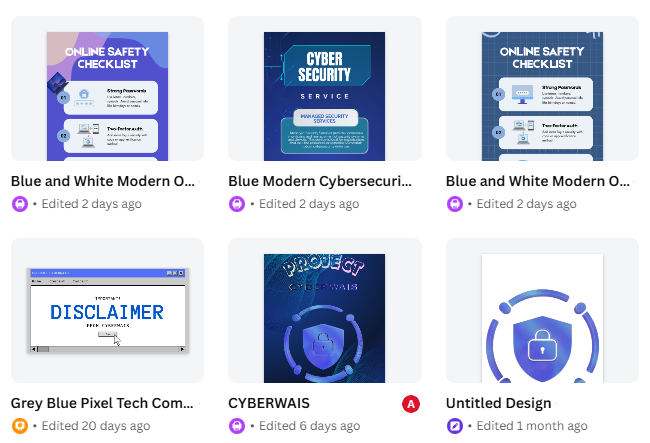
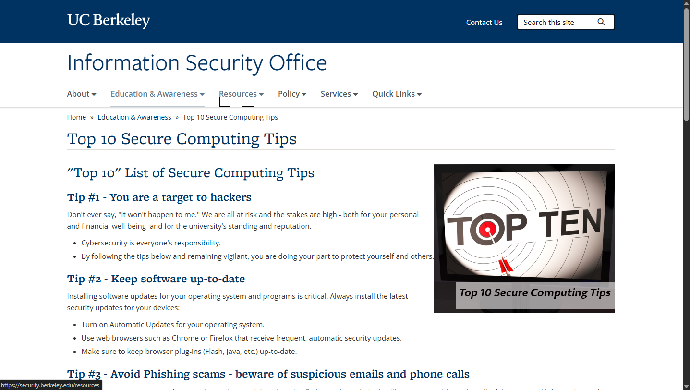
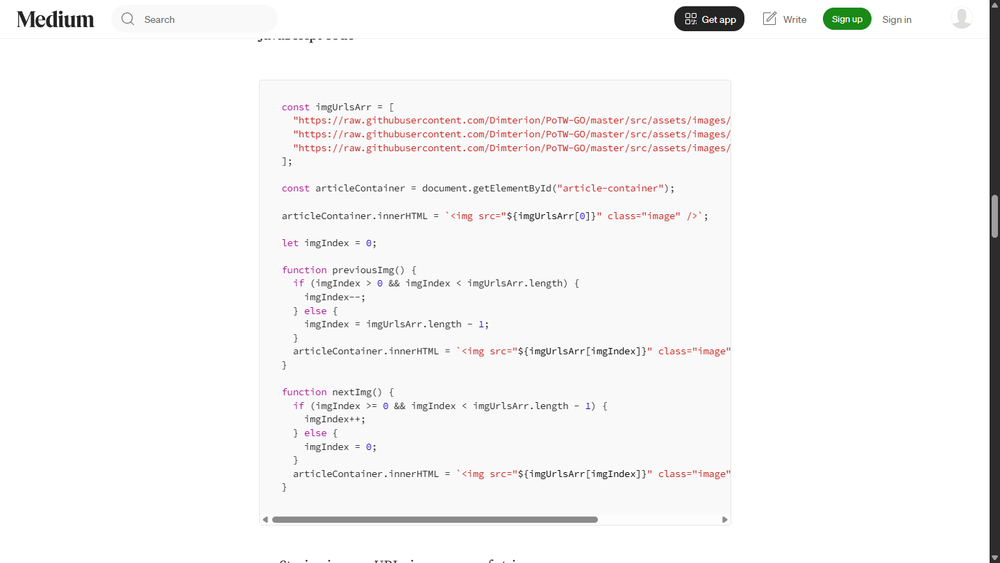

Web Contents & Screenshots used for CyberWais

This screenshot shows the where the CyberWais logo And some promotional content was designed, it is made from canva from templates in the community.

Reference used for the 'CyberWais Tips' section.
https://security.berkeley.edu/resources/best-practices-how-to-articles/top-10-secure-computing-tipsWe used javascript to create the profile scroller and buttons functionality such as "continue" and navigation buttons in the header. Code is referenced from medium.com and rewritten with Microsoft Copilot from Visual Code Studio and Gemini.
https://medium.com/swlh/create-a-simple-horizontal-scroller-with-javascript-1c9e5b8a7f0